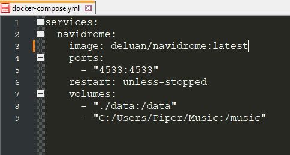
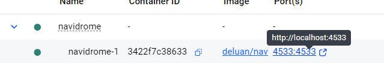

DIGITAL HOMESTEADING WITH DOCKER
(ON WINDOWS, FOR DUMMIES)
Lotsa people on Neocities and similar spaces are into local-first soultions and independent ownership of their data, and yet I see so few of them self-hosting, which makes me sad.
The reason for this, I suppose, is the perception that it it's difficult or requires a Linux computer/dedicated hardware. None of this is true! You can selfhost programs on your regular ass I-need-Windows-for-school/work/art PC just fine and most programs will only take you a couple minutes to get going, no more than most regular softwares or web apps. But there are no good tutorials on how to do this, and the way Docker is discussed online seems mostly designed to confuse anyone without a compsci degree as much as possible. So as a sort of community service I decided to write a simple beginner's tutorial, to show you all that it really isn't scary.
This page will walk you through the basics of starting a Docker container from a compose file, writing and reading that compose file, maintaining and backing up container data, and some other general advice. It's intended for someone with some computer experience but not necessarily for 'power users' or people especially interested in servers and sysadmin. I'm not one of those either, after all.
Installing Docker
The first thing you need to do is not to install Docker Desktop. Actually it is to install Windows Subsystem for Linux.
To do this, please see the official guide.
Basically this puts a faux Linux commandline on your PC. I don't really know the details, but it works. Just go with the default version (Ubuntu), it's the most widely supported and I don't think any of it makes much difference anyways.
Now you can install Docker Desktop. It'll ask you to login or make an account but it works pretty well fine without one too, so you can logout right after if you want. Just pick 'Hobby' as your reason and you'll be set up with a generic personal account just fine. It takes a while so maybe go make some tea or something.
Your First Container
The way Docker works is it basically makes 'mini-virtual-machines': smallish isolated environments where a program can run alongside all it's software dependencies. This is useful because Cool App 1 might need BingusBongus version 2.5.6.6.7 while Cool App 2 needs BingusBongus version 2.5.6.7.8.fuckyou and you can't have both of those installed on your raw computer at once. But a full virtual machine would use a lot of processing power just for Cool App 1, where a docker container just sort of pretends to be one. Or something. I don't really get it honestly. But it lets me host stuff and that's cool.
The easiest way to install a container is to use a compose file.
A compose file is a simple yaml (text) file that tells Docker what image to pull from the Internet, what places to store files and to access files from, and maybe some software settings too.
Nearly everything Docker-installable includes an example compose file avaliable for download, usually named like 'composeexample.yml'. Simply download this file to whichever directory on your PC, rename it to 'docker-compose.yml' and open it up with Notepad or similar.
As an example in this article I'll be using my Navidrome compose, because it demonstrates all these things nicely.
Like I said: not scary at all.
Services is a generic pointer in the yaml structure.
Image shows us the image that is being downloaded; in this case it is the latest release of Navidrome from the 'deluan' account. You might replace :latest with a specific version, like :2.5.6, or a different tag, like :nightly or :unstable, depending on what you are doing. But most of the time :latest should be OK.
Ports affect the URL you will use to access the webpage of the service from your wi-fi. They have to be different for each program and there are some you cannot use as they're reserved for other network functions. Here, my Navidrome instance will open at something like http://localhost:4533 . As for why they're listed twice... I'll get into that in a moment.
Restart tells Docker how to treat the container service if an outage stops it somehow. Here it will try to restart it ASAP unless the outage was caused manually through the command line or Docker Desktop program.
Volumes are where things get interesting. Volumes are where the container has access to put and manipulate files. Each volume technically exists twice in the computer's understanding (but only once in actuality, in terms of storage space): once in the real Windows system and once in the pretend Linux system.
The file location on the left is the Host (Windows) location. The file location on the right is the faux-Linux location. The same applies to the ports: left for Windows (where you'll actually access the container), right for the pretend inside-container port exposing.
Volume locations are relative; the period in the Data path means the /data/ folder will be created inside the compose file's folder, like so:
I'd recommend doing this for most data folders just to make backups easier (more on that later.)
The other volume is my pre-existing music library, which Navidrome lets me stream from my PC (like at-home Spotify.) To use a specific Windows path like this, you must edit it to use forward slashes (this being how Linux file paths look.)
Environment values set configuration (settings) options for the actual software in the comtainer and vary from program to program. Sometimes you'll see a link to a '.env' file instead, which does the same thing but in a separate file. There'll usually be instructions on the program's website/github as to how to set it up. I don't have any environment variables changed on my Navidrome but there are a lot of possible settings!
Now that you know how to set up your Compose file, we can run it.
Starting your Container
Open up the folder where you've placed your Compose file (and where your container data will live.) Right click on an empty space in the folder and select 'Open Terminal' from the resulting menu.
Type in
And assuming everything is configured correctly... Go to the localhost link ending in the port you set in your browser, or open Docker Desktop and use the link listed there:
and follow any setup instructions listed.
And now: you're done! You have officially hosted a web app on your own computer.
Backing Up Data
Docker programs usually store data in databases. Usually they use SQlite which lucky for us works just like a normal file and can be copied and pasted or Rcloned or whatever to any drive or online storage service.
HOWEVER you must always STOP YOUR CONTAINERS before backing them up. You can do this through the Docker Desktop UI by pressing the square stop button or by running the terminal command:
This is because if the container is still running it may update the database, which can cause data loss or corruption. And we don't want that!
Accessing outside of your Home Network
The easiest and safest way to access a self-hosted service outside of your home Wi-Fi is to use a VPN to connect to your home network. The most popular of these is Tailscale, and a guide on how to set it up can be found here.
Piper's Favourite Programs
That's basically it. Like I said, it's real easy.
Here is some self-hosted software I like:
- Jellyfin - Stream your own movies and TV to any screen in the house! Or out of the house, even.
- Navidrome - Super-customizable music streaming. My favourite feature is the 'smart playlists' that can be randomized like Spotify playlists within various parameters based off of your music tags.
- Grist - Databases-as-spreadsheets. I use one to track all the movies I've seen, books I've read, games I've played...
- FreshRSS - Nice-looking RSS reader.
- RSSHub and Bridge - Huginn and Muninn of the Internet (not to be confused with the unrelated selfhosted software Huginn!), flying all over the Web to turn various sites into RSS feeds for me at the start and end of every day. So convenient (when they don't randomly break due to social media sites being coded by evil wizards.)
- Linkwarden - Bookmark manager. Dump all the sites n' images n' youtube videos you wanna look at later and fugettaboutit (but not really because you still wanna look at em.) Supports folders and tags and doesn't force you to use a third-party thinker (or 'AI') which is why I prefer it over the others.
- Pingvin Share - Send images from my phone to my PC and vice-versa.